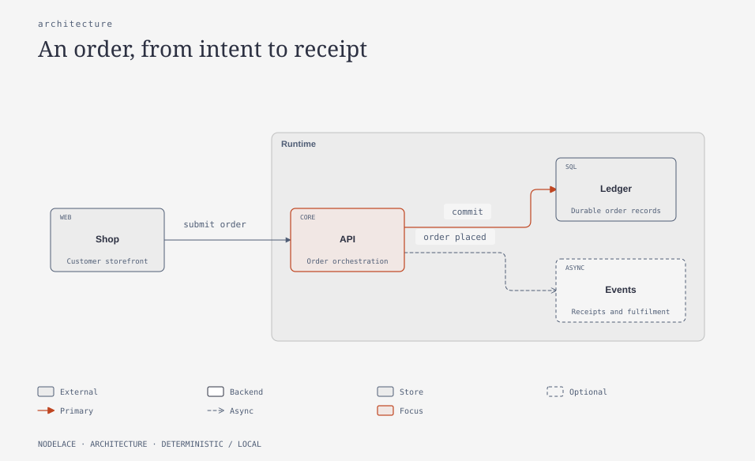
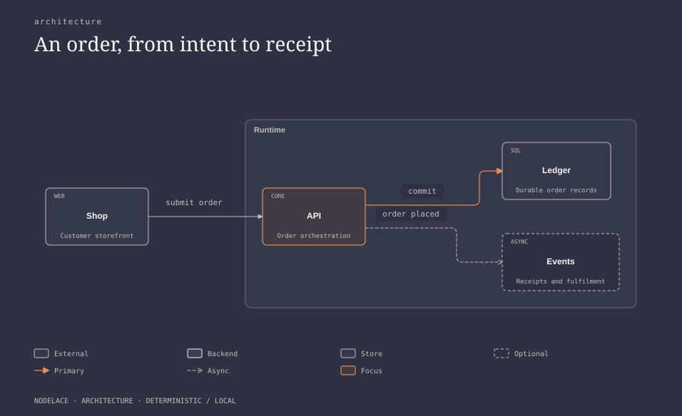
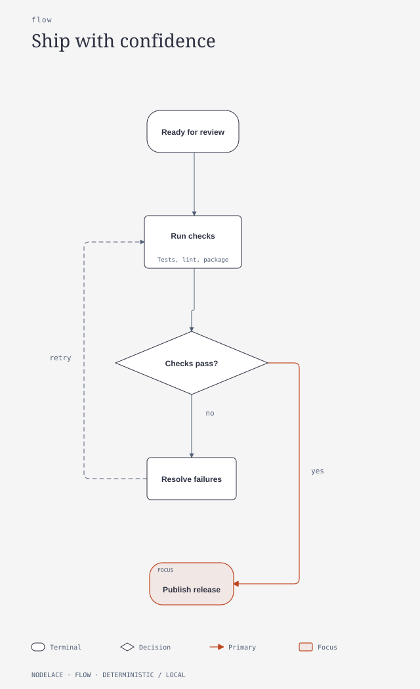
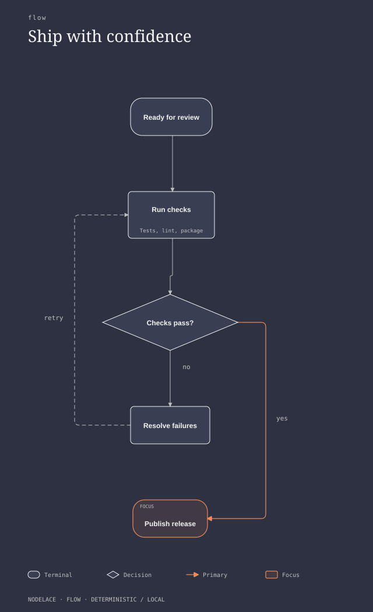
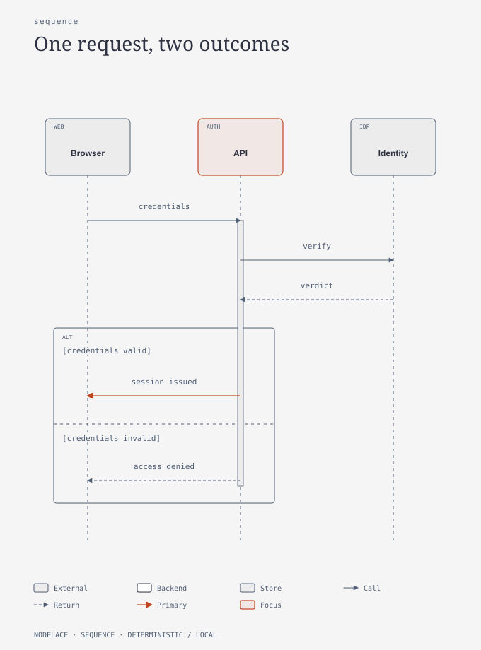
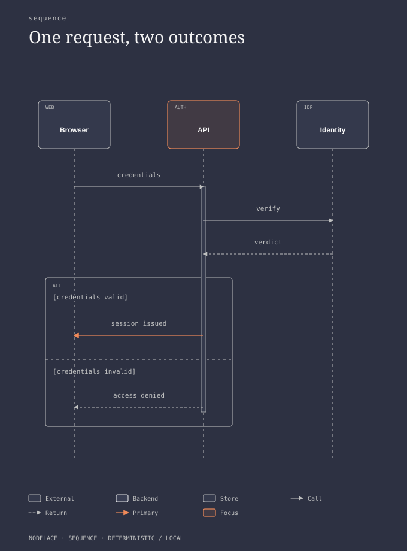

Nodelace: light & dark
The same compact source, rendered locally. Open a diagram for its readable full size.
order service · light

Source · SVG · HTML
order service · dark

Source · SVG · HTML
release gate · light

Source · SVG · HTML
release gate · dark

Source · SVG · HTML
sign in · light

Source · SVG · HTML
sign in · dark

Source · SVG · HTML